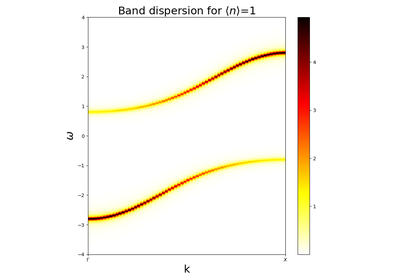

DMFT examples¶

Two Site DMFT examples¶
This section reproduces the concepts presented in:
- Potthoff, M. (2001). Two-site dynamical mean-field theory. Physical Review B, 64(16), 165114. http://dx.doi.org/10.1103/PhysRevB.64.165114
This section reproduces the concepts presented in: